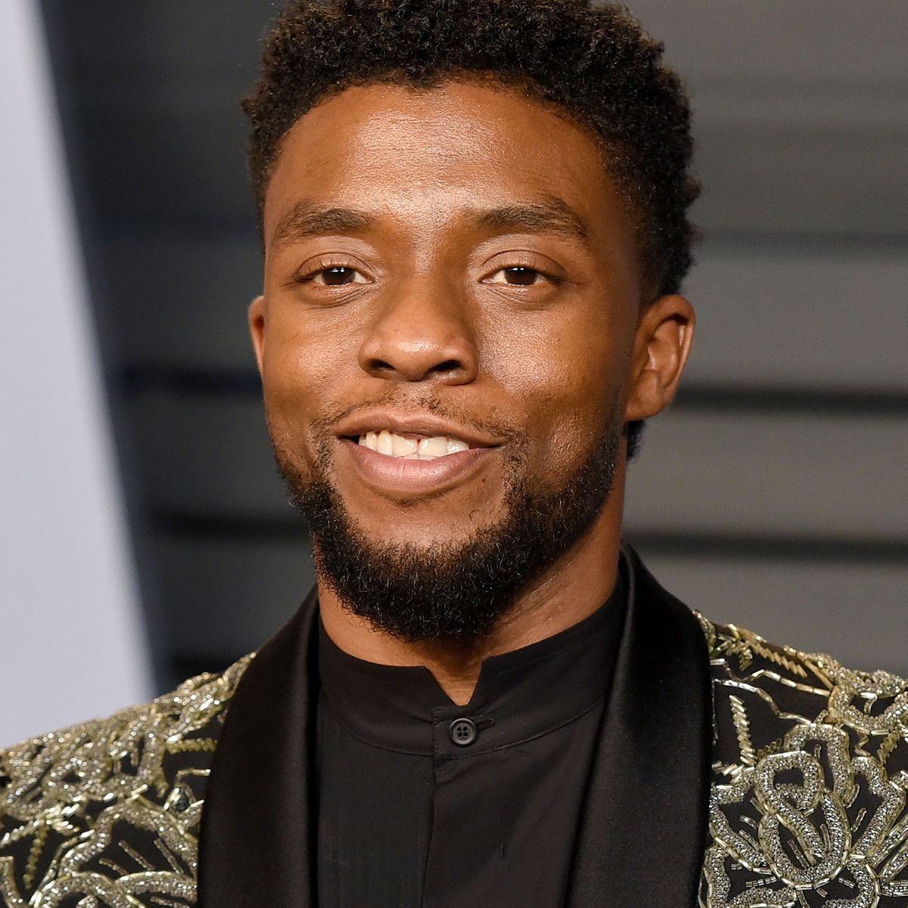
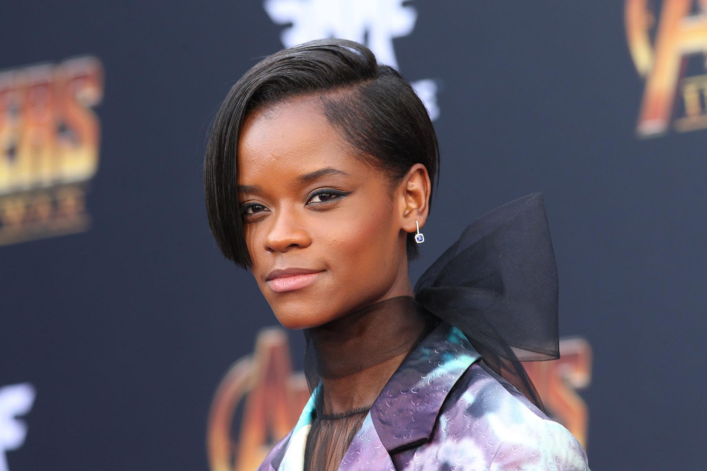
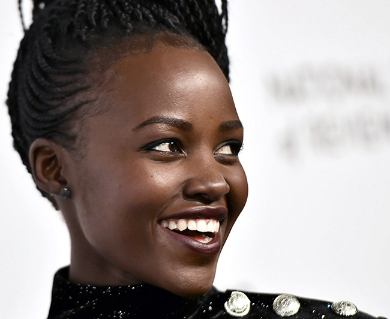
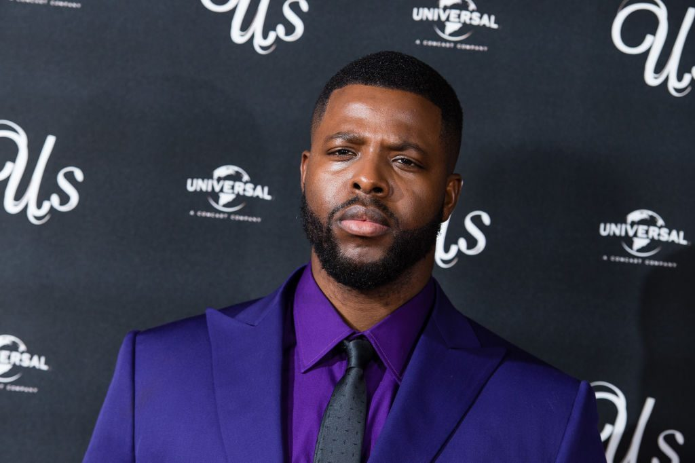

Cast of The Black Panther 2
T'Challa - Chadwick Boseman
The son of the late King of Wakanda and the superhero Black Panther. Part of his duties as a king and a superhero is to protect his people of Wakanda and work with fellow Marvel superheros to keep evil out of Earth.

Ramonda - Angela Bassett
As the wife of the late T'Chaka and mother of T'Challa and Shuri; all she wants is for her children to lead by example and for wakanda to stay protected and safe ... by any means possible.

Shuri - Letitia Wright
As the younger sister of the king, Shuri works hand in hand with T'Challa in creating inventions that can advance his powers as the Black Panther. She is proudly the chief science officer for Wakanda.

Nakia - Lupita Nyong'o
A formidable Wakandan, Nakia finds herself conflicted thanks to her feelings for the king, T'Challa. Nakia prides herself in protecting the country and her people.

M'Baku - Winston Duke
Leader of the Jabari Tribe in Wakanda, M'Baku has become someone that T'Challa looks to for help when Wakanda is under attack. Will they be able to join forces once again or will they be on opposing sides?